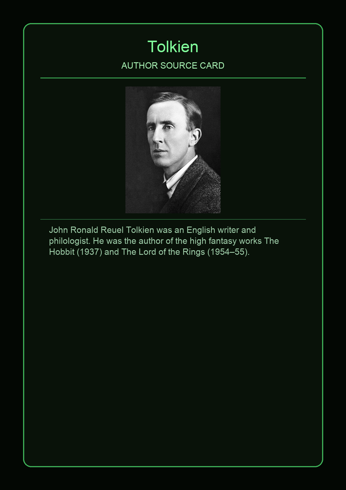
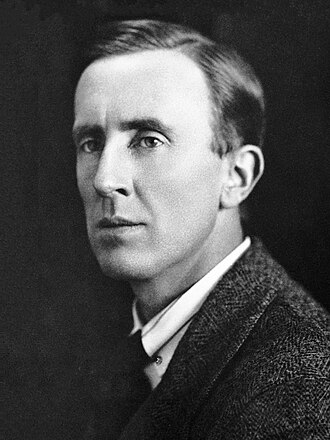

John Ronald Reuel Tolkien was an English writer and philologist. He was the author of the high fantasy works The Hobbit (1937) and The Lord of the Rings (1954–55).
This page aggregates references to the source material behind Name Lore entries.